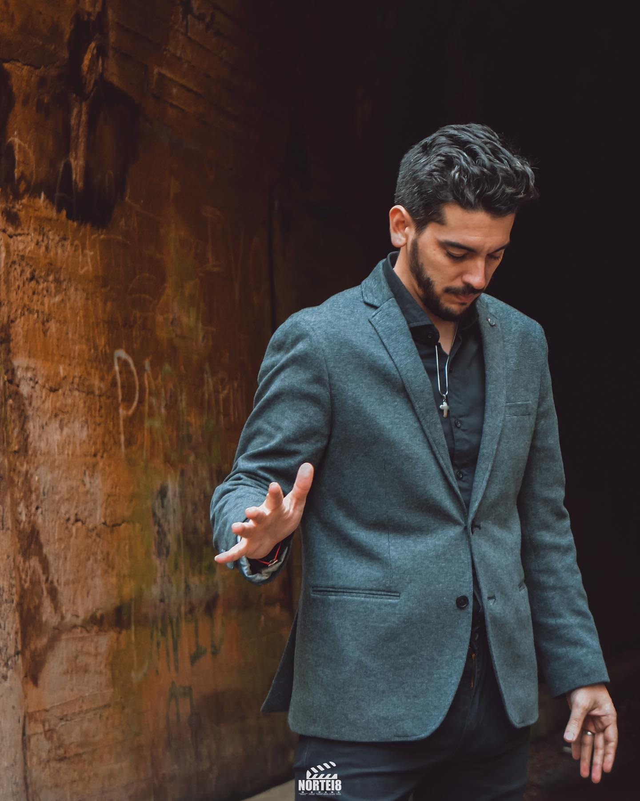

BIOGRAFÍA
Dos caminos, dos largas carreras por separado, hoy son Meibel.
Meibel es un dúo folclórico compuesto por los hermanos Carla y Nahuel Bazán. De cuna cantora (hijos de Carlos Bazan, integrante del mítico Trio San Javier.) Formaron una larga trayectoria musical por separado, para en 2020 unirse y conformar este dúo que nos va a transportar a las raíces folclóricas, pero con una esencia melódica, lo que hace de este dúo una propuesta única.


A continuación, haremos un breve repaso por la carrera de ambos artistas:
Carla Bazán: Carla comenzó su carrera artística a los 15 años, en la provincia de Córdoba de la mano de su padre Carlos y de su padrino artístico Cesar Isella, en el programa Telemanías. En el año 2000 realizó un disco junto a su padre donde le cantaron a Catamarca, y se tituló "Padre, hija y espíritu de canto". A fines del 2002 ingresó a la casa de Gran Hermano, con el deseo de llevar el folklore a un programa popular, allí tuvo la posibilidad de hacer algunos shows y cantar junto a Alejandro Lerner. En el 2005 lanzó un disco titulado "Herencia de un sueño" donde hay canciones de su autoría, así como temas clásicos del folklore. En el año 2010 volvió a juntarse con César Isella, recorriendo los escenarios más reconocidos de nuestro país. En el año 2012 participó en el disco “El cantar es andar”, junto a artistas de la talla de Isella, Patricia Sosa, Lito Vitale, entre otros.
Nahuel Bazán: Nahuel dio sus primeros pasos en el folklore en el año 2010, cuando el reconocido cantautor Pedro Favini lo convoca para integrar el “Trio San Javier”, donde también cantaba su padre Carlos, abriéndole las puertas de los más reconocidos festivales. En 2012, al fallecer Favini, su hijo Franco toma su lugar, continuando con el legado hasta el 2014. Carlos Bazán se retira del conjunto, ingresando Bruno Ragone y en enero del 2015 se presentan una vez más en el Festival de Jesús María, pero esta vez bajo el nombre de “Destino San Javier”. A fines de ese mismo año, Nahuel se aleja del conjunto y conoce a Víctor Simón, pianista y compositor, quien lo integra como primer vocalista a su proyecto musical, “Homenaje a Los hermanos Simón”. En 2017 conoce a Carlos Palacios, director de “Los de Salta”, ingresando al grupo y permaneciendo en él cuatro años.
